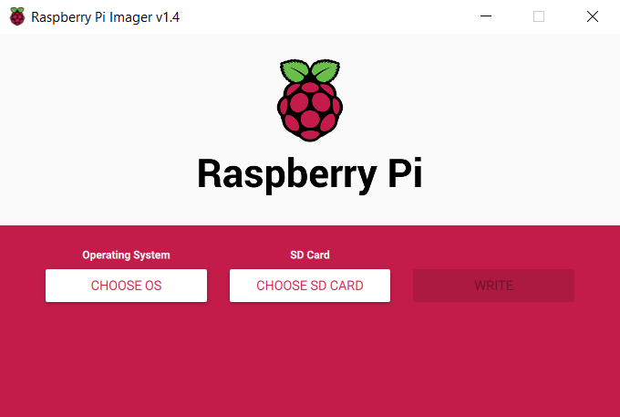

There is one program that you will need to install in order to image the SD card. There are many programs that can do this, but Raspberry Pi Imager will be used in this demonstration.
Raspberry Pi Imager lists some default operating systems to choose from. There are many to choose from but this demonstration will use Raspberry Pi OS, the official supported operating system.